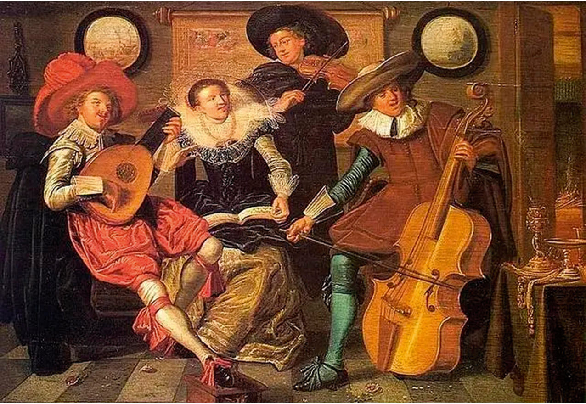
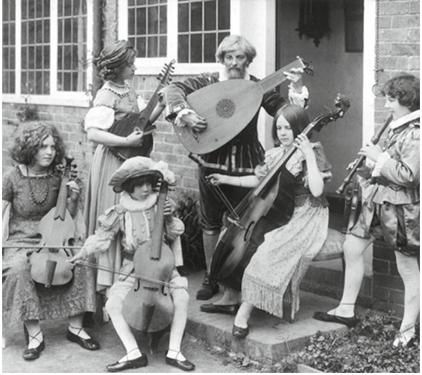
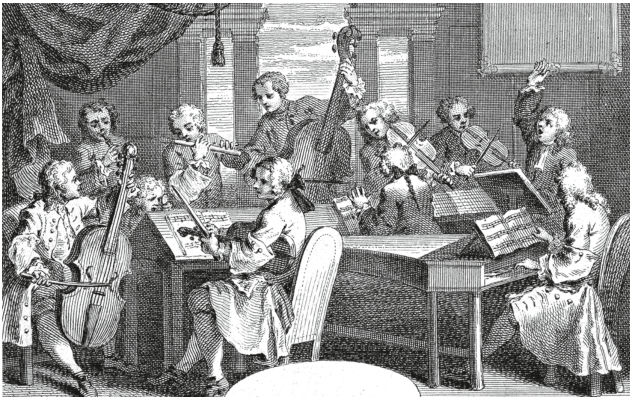
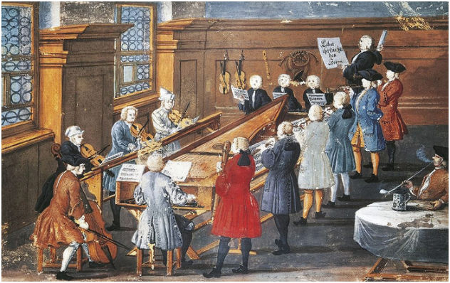

CELLO Эпоха · с. 39–42
Исторически информированное исполнительство
Что такое HIP, как он возник и кого слушать, куда сходить и что почитать

Эта рубрика об исторически информированном исполнительстве, в которой будут рассматриваться аспекты инструментария, нотные и литературные источники, исполнительские практики, история самого направления. Будет полезна тем, кто интересуется изучением музыкальных произведений далёких от нас эпох.
Представим, что обычный человек откроет Евангелие на церковнославянском языке.
Скорее всего, он сможет прочесть текст, понять отдельные слова, но удастся ли ему разгадать смысл прочитанного без знания символики и контекста? Примерно в такой же ситуации находится опытный исполнитель, обладающий романтическим взглядом на интерпретацию, столкнувшись с нотными текстами других периодов.
Барочная нотация подобна эскизу и представляет собой лишь набросок; подразумевается, что исполнитель и сам в состоянии дополнить и раскрасить сочинение, так как большинство музыкантов в доромантическую эпоху владели навыками сочинения и импровизации.

Так, например, в ранних итальянских сонатах композитор оставлял пространство между двумя нотами, предполагая, что исполнитель дополнит его диминуциями1на свой вкус. А для французской музыки характерен приём инегаль2 который также не обозначается в нотной записи.
Какими принципами руководствоваться при выборе штрихов и артикуляции? Как меняет звучание и артикуляцию использование барочного смычка и жильных струн? Как расшифровать партию бассо континуо3? Как сейчас исполнять музыку раннего романтизма, если в тот период многие струнники ещё пользовались жильными струнами? Как выстроить баланс с клавесином или хаммерклавиром?
Поиском ответов на эти и многие другие вопросы и занимается HIP. Исторически информированное исполнительство (Historically Informed Performance) – это исполнительская практика и философия, приверженцы которой стремятся интерпретировать музыку в соответствии с художественными, техническими и акустическими представлениями той эпохи, когда она была создана. Они уделяют особое внимание исполнительским нормам и особенностям исторического периода. Изучая трактаты, исследователи получают представление об орнаментике, фразировке, артикуляции и правилах их использования.
Настройка инструментов тоже отличалась от современной. Привычную нам высоту, когда ля равна 440 герц, приняли только в 1939 году. До этого строй неоднократно менялся.
Важным предметом спора является приём вибрато при игре на струнных инструментах. Так, в эпоху барокко вибрация применялась, однако не на каждой ноте и скорее как изысканное украшение, а не постоянная составляющая звука. Очевидно, что абсолютно точно воссоздать звучание прошлого невозможно; тем не менее, музыкант, активно расширяющий свои знания в этой области, начинает совершенно иначе мыслить.
Интерес к инструментам и музыке XVI–XVII веков возник на рубеже XIX–XX веков. Британец Арнольд Долмеч (1858–1940), скрипач, ученик Анри Вьетана, настолько заинтересовался старинными инструментами, что стал заниматься реконструкцией клавесинов и клавиров. Он также создавал копии практически всех разновидностей инструментов XV–XVIII веков, включая виолы, лютни, блокфлейты, различные клавишные инструменты. Его книга 1915 года «Интерпретация музыки XVII–XVIII веков»4 стала важной вехой в развитии интерпретации старинной музыки. С 1925 года по его инициативе стал проводиться летний Международный фестиваль старинной музыки, который проходит ежегодно в Хейзлмире. Его дочь Натали (1905–1989) создала британское «Общество виолы
да гамба», а сын Карл (1911–1997) стал основателем британского «Общества блокфлейтистов». Семья Долмеч стояла у истоков направления, которое и станет называться исторически информированным исполнительством.
Ещё один музыкант, виолончелист Кристиан Дёберайнер (1874–1961), основал в Мюнхене в 1905 году «Общество старинной музыки». Его деятельность началась с концерта, в котором Дёберайнер исполнил сонату Карла Фридриха Абеля на подлинной виоле да гамба5. Он же в 1936 году выпустил руководство по игре на виоле да гамба и подготовил к изданию многие произведения И.С. Баха, Г.Ф. Телемана, Д. Букстехуде, М. Маре, Я. Стамица, Й. Гайдна и других.
Музыкантов, интересующихся музыкой прошлого, из года в год становилось всё больше. В середине двадцатого века старинная музыка пользовалась особой популярностью в Великобритании, Нидерландах, Германии и Франции. Доступность архивных материалов и факсимиле, развитие музыковедения, появление копий исторических инструментов – всё это способствовало росту числа последователей.
Среди первых представителей Густав Леонхардт, Мария Леонхардт, Николаус Арнонкур, Кристофер Хогвуд, Джон Элиот Гардинер, Франс Брюгген, Сигисвальд Кёйкен, Тревор Пиннок, Эндрю Манце, Рене Якобс.
Важно заметить, что взгляды и мнения музыкантов зачастую различны и могут быть противоположны в каких-то вопросах. Это нормально, так как открываются новые источники, наука движется вперёд, а тенденции исполнения меняются даже внутри одного течения.
В СССР историческое исполнительство развивалось в условиях идеологических ограничений и доминирования советской исполнительской и педагогической школы. Первые осознанные шаги HIP относятся к 1960–1970-м годам. Яркими представителями этого периода являются: Андрей Волконский, Татьяна Гринденко, Марк Вайнрот, Борис Доброхотов, Алексей Любимов.
Создавались и активно выступали и гастролировали отечественные коллективы: «Мадригал», «Академия старинной музыки», «Орфарион», «Musica Petropolitana», «Pocket Symphony», «Солисты Барокко», «Telemannconsort», «Pratum Integrum».
В 1997 году по инициативе Алексея Любимова, Наталии Гутман, Назара Кожухаря и Марка Пекарского в Московской консерватории открылся Факультет исторического и современного исполнительского искусства (ФИСИИ), объединивший всемирно известных музыкантов, пропагандирующих принципиально новый подход к современному музыкальному процессу. В наши дни преподавателями факультета являются лучшие исполнители старинной музыки в России. Посмотреть их полный список и подробнее узнать о программе обучения и поступления можно на сайте ФИСИИ.
С момента основания факультета класс барочной виолончели ведёт профессор Андрей Алексеевич Спиридонов. В рамках Виолончельной академии проходят его мастер-классы, на которые могут попасть все интересующиеся старинной музыкой.
Яркими исполнителями на исторических виолончелях являются: Аннер Билсма, Бруно Коксет, Яп Тер Линден, Кристин фон дер Гольц, Рул Дилтинс, Кристоф Куан, Давид Штромберг, Ева Лайменстел, Гай Фишман, Павел Сербин.
Хочется отметить, что HIP не замыкается только в рамках музыки эпохи Барокко и не стремится достичь стопроцентной аутентичности. Интересы исполнителей, занимающихся исторической практикой, многогранны: от музыки средневековья до сочинений классического периода, от сочинений романтизма до произведений в стиле необарокко наших дней. Последователи HIP готовы к эксперименту, глубокому погружению в эпоху и материал, к работе с первоисточниками. А опыт общения с музыкой самых разных стилей порой даёт возможность посмотреть на известные произведения под другим углом.


Послушать
Жорди Саваль, Филипп Жаруски, Чечилия Бартоли, Франко Фаджоли, Жан Рондо, Джед Венц, Риккардо Минази, Эндрю Лоуренс-Кинг, Смит Хопкинс, Лука Пьянко, Паоло Пандольфо, Витторио Гиельми Коллективы: Il Giardino Аrmonico, Musica Antiqua Köln, L’Arpeggiata, Caffe Zimmerman, Il Pomo d’Oro, Freiburger Barockorchester
Сходить на концерт
Ансамбли:
Алькáнтар, Мадригал, MusicaTempora, Gnessin Baroque, La voce strumentale, Солисты Барокко, Neo Barocco, Les Moscovites, Questa Musica, Новая Голландия, La Compagni, Teneritas
Оркестры:
Ренессанс-оркестр, Pratum Integrum, musicAeterna, Rosarium
Почитать на русском языке
Б. Хейнс. «Конец старинной музыки», Н. Арнонкур: «Мои современники: Бах, Моцарт, Монтеверди», «Музыка барокко», И.И. Кванц. «Опыт игры на флейте траверсо», Журнал «Старинная музыка», Публикации и книги Валерия Владимировича Березина, Д. Рябчиков. «Музыкальная история средневековой Европы. Девять лекций о рукописях, жанрах, именах и инструментах», «Утешение средневековой музыкой. Путеводитель для современного слушателя», И.Н. Должников. Учебное пособие по игре на барочной скрипке и барочном альте.
Во многих странах проводятся многочисленные фестивали, ориентированные на исторически информированное исполнительство. Среди наиболее крупных из них: The Musica Antiqua в Брюгге (Бельгия), Festival Oude Muziek в Утрехте (Нидерланды), Фестиваль Earlymusic (Россия, Санкт-Петербург), Innsbrucker Festwochender Alten Musik (Австрия), Festival de musique Baroque в Амброне (Франция), BachFest в Лейпциге (Германия), International Heinrich Ignaz Franz Biber Festival в Вене (Австрия).
Специалистов в области исторически информированного исполнительства привлекают к постановкам в оперных театрах, к фестивальным программам, в качестве консультантов к историческим фильмам и театральным постановкам.
В следующих выпусках вас ждут интересные статьи, интервью с музыкантами и экспертами, а также разбор важных исполнительских аспектов.